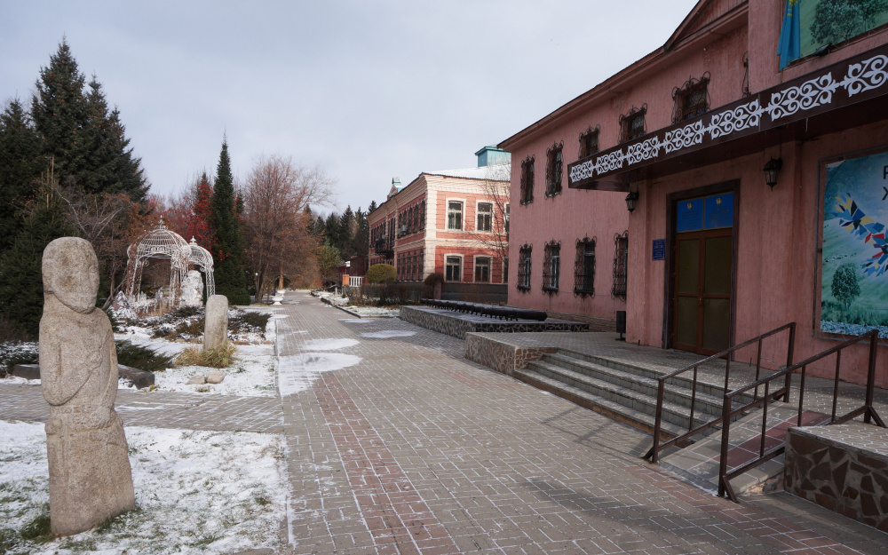

Өлкетану мұражайы
Шығыс Қазақстан облыстық тарихи – өлкетану мұражайы республикамыздағы ескі мұражайлардың бірі болып табылады. Ол Халықтар үйі жанында 1915 жылдың өзінде ұйымдастырылған болатын. Оның негізіне жергілікті өлкетанушылар топтамалары жатады. Мұражай залдарының бірінде Шығыс Қазақстан облысы табиғатының байлығы көрсетілген. Бұл облыста сүтқоректілердің 114 түрі, құстардың 400 түрі, өсімдіктердің 3500 түрі, 15 мыңнан астам жәндік түрлері ұсынылады. Қорларда этномологиялық, орнитологиялық, зоологиялық, минерологиялық, палеонтологиялық, ботаникалық топтамалар, құстар мен сүтқоректілердің тұлыптары сақталуда. Өскемен қаласының ХVIII-XX ғасырлардағы тарихы залында қаланың қалыптасуы мен дамуын көрсететін заттар қойылған.